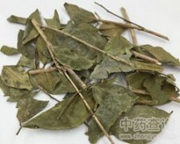

扶芳藤

拼音
Fú Fānɡ Ténɡ
别名
换骨筋、小藤仲、爬行卫矛
来源
卫矛科卫矛属植物扶芳藤Euonymus fortunei （Turcz.） Hand.-Mazz.，以茎、叶入药。夏秋或全年可采，切段晒干。
生境分布
攀援于墙壁或树上。分布我国华北、华东、中南、西南各地。庭院中亦有栽培。
药材特点
扶芳藤，又名：爬行卫矛。 常绿或半常绿灌木，匍匐或攀援，高约1.5米。枝上通常生长细根并具小瘤状突起。叶对生，广椭圆形或椭圆状卵形以至长椭圆状倒卵形，长2.5～8厘米，宽1.5～4厘米，先端尖或短锐尖，基部阔楔形，边缘具细锯齿，质厚或稍带革质，上面叶脉稍突起，下面叶脉甚明显；叶柄短。聚伞花序腋生；萼片4；花瓣4，绿白色，近圆形，径约2毫米；雄蕊4，着生于花盘边缘；子房上位，与花盘连生。蒴果球形。种子外被橘红色假种皮。花期6～7月。果期9～10月。
性状
性状鉴别 茎枝呈圆柱形。表面灰绿色，多生细根，并具小瘤状突起。质脆易折，断面黄白色，中空。叶对生，椭圆形，长2-8cm，宽1-4cm，先端尖或短锐尖，基部宽楔形，边缘有细锯齿，质较厚或稍带革质，上面叶脉稍突起。气微弱，味辛。
性味
苦、甘，温。
功能主治
散瘀止血，舒筋活络。用于咯血，月经不调，功能性子宫出血，风湿性关节痛；外用治跌打损伤，骨折，创伤出血。
用法用量
2～4钱。水煎或泡酒服。外用适量，研粉撒患处或捣烂敷患处。
化学成分
含卫矛醇；种子含前西红柿红素和前-γ-胡萝卜素。
药理作用
1：无药理作用数据
摘录
《全国中草药汇编》